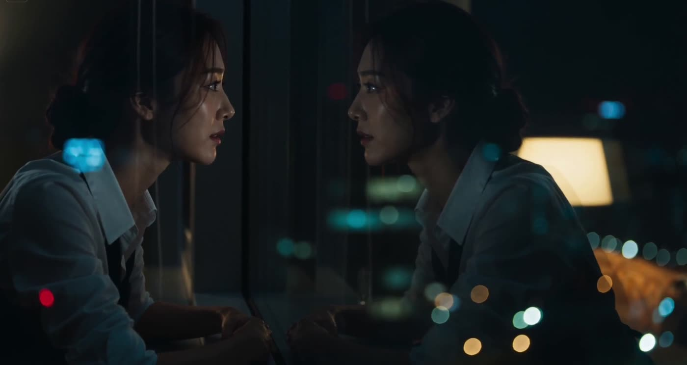
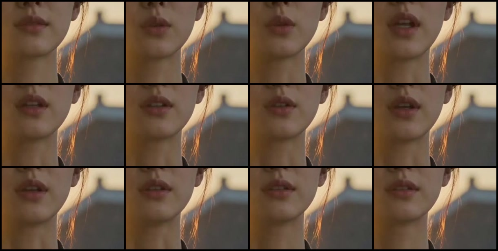
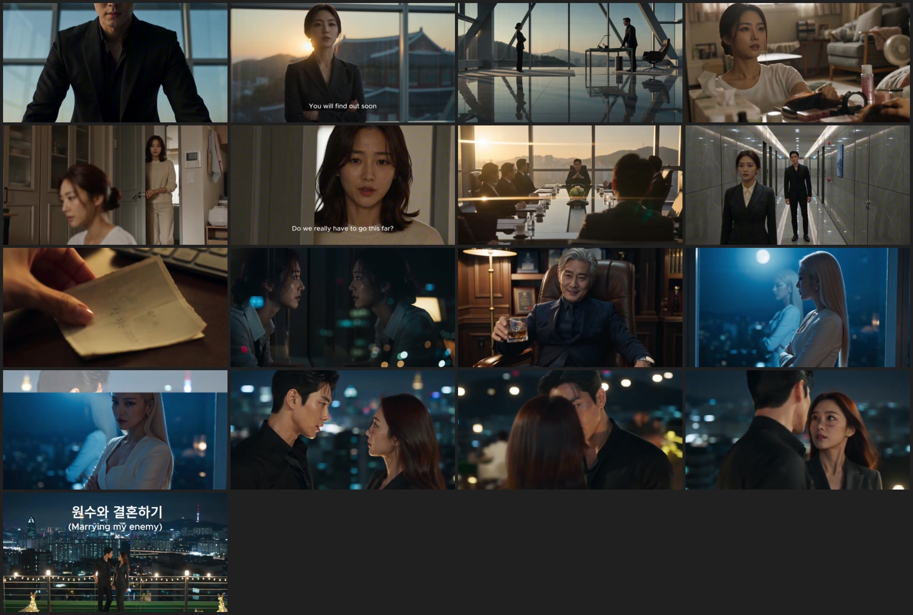

We read the
whole film.Then we costed the copy.
Bob sent an 88-second Korean AI trailer and asked how we get to that level, keep one face across shots, and do it all on free software on the Blackwell box. So the file went through ffmpeg frame by frame, the container gave up the editor that made it, and the answer to the hard part — an actor who speaks, in sync, and stays the same person — turns out to already exist under Apache 2.0.
Three answers
1 · What made it
Not one generation — a 35-cut edit assembled in a consumer NLE on a Mac, with a library music track and burned-in subtitles. The clips are natively 24 fps, conformed to 30 by frame duplication.
2 · Why it looks expensive
Roughly half model, half craft. The model earns the reflections and the skin. The edit earns the rest by never showing a weak shot for longer than a fifth of a second.
3 · What we build
An all-Apache-2.0 local stack: lock the face as a still, then hand that still plus the spoken line to MOVA, which returns 8 s of 720p24 video with the audio already in sync.
What the file
actually is
Everything in this section was measured here, on the file, with ffmpeg and a bit of numpy. No guessing.
The container names the editor
Inside a 736-byte meta atom sits a JSON blob whose keys are "product":"vicut" and "source_type":"vicut", alongside "os":"mac", a musicId, and a set of is_use_ai_* flags all reading zero.
vicut is written by a ByteDance CapCut-family desktop editor. One independent sighting of the same atom exists in the wild, on a Windows export. It is not possible to separate the international app from its Chinese sibling on this evidence, so that is as far as the claim goes.
Every one of those flags names a first-party button in that editor — AI Relight, AI image generator, AI video generator, custom voices. The is_use_ prefix records what the user clicked, not what the pixels are. An editor has no oracle over imported media.
So a clip generated anywhere else, downloaded, and dropped on the timeline leaves every flag at zero. They are not evidence that no AI was used. The platforms agree: TikTok auto-labels only its own in-app AI and requires manual disclosure for everything else.
What the blob does establish, without ambiguity: the piece is a multi-clip edit with an imported library score and burned-in titles, exported from a desktop editor on a Mac. There is no C2PA box anywhere in the file, and no visible watermark survives.
Native frame rate is 24
mpdecimate across the whole file keeps 2,128 unique frames of 2,654 — 80.2%. Twenty-four divided by thirty is 80.0%. Per-shot checks land at 80.0, 81.3 and 82.9%. The source clips are 24 fps; the timeline was 30, and the export duplicated frames rather than interpolating.
That matters because 24 fps is what the frontier closed models emit. The open models do not: Wan 2.2 is natively 16 fps.
Where 2032×1080 comes from
No generator outputs a 2032-pixel width. It is not a scope crop either — 2.39:1 at 1080 tall would be 2581 wide. The editor pins export height to the tier (1080) and stretches width to hold the aspect ratio, so an odd width means the source was not 16:9 when it hit the timeline. One number falls straight out:
- 60 px of height removed from a 1920×1080 frame → 1920×1020. Rescale to 1080 tall → 1920 × (1080/1020) = 2032.94 → 2032, and 2032 is 16 × 127, macroblock-clean.
- 56 px would give 2024; 64 px would give 2040. So sixty is tightly determined — but where it came off is not. All 60 off the bottom produces the identical number.
Google's Flow burns a visible veo wordmark into the bottom-right of its output, and per Google's own help page visible watermarking is applied automatically in India, South Korea and Vietnam. A Korean creator using Flow gets the mark whether they want it or not, and the published removal advice is a 5–10% crop. Sixty pixels of 1080 is 5.6%.
That is a clean fit, and it is still only a fit. The number proves 60 px of vertical crop; it does not prove why. Leading hypothesis, not a finding.


The identity actually holds
The male lead appears in 7 shots across an office, a corridor and a rooftop, in two wardrobes. The suited female lead appears in 4 to 5, across a sunset office, an apartment, a corridor and a night office, in three. That is genuine cross-shot consistency and it is the thing worth copying.
Every female face in the film sits in a narrow band of the same face type. Some of what reads as control is the model's prior collapsing toward one look. Two of the women are separable only by hair. Do not assume the creator had more grip than they did.

Craft is doing
half the work
This part costs nothing, needs no GPU, and transfers to a weaker model immediately. It is the reason the film reads as expensive.
Five lines in eighty-eight seconds
Almost the entire film is silent performance. Dialogue is the most expensive thing to generate and the easiest to get wrong, so there is barely any.
Frame the weakness away
Back-of-head, over-shoulder, silhouette, extreme wide, or blown to white. Hands appear once — in the one shot built to show off hands.
One face in focus, ever
Shallow depth of field puts a single face on the focal plane and dissolves everything that would betray the shot behind it.
Profile two-shots
Both actors turned to face each other in profile — the pose a generator holds most stably, and it reads as intimacy.
Spend the climax on speed
The last nine seconds are 20 cuts at 0.27 s average. Nothing has to hold up, and the audience reads it as a crescendo.
Cut on a flash
White-flash transitions hide the seam between two clips that were never going to match. Fourteen of them in this film.
The master sits at −24.0 LUFS integrated, true peak −7.4 dBFS. YouTube normalises to about −14. This film will play roughly 10 dB quieter than everything around it. Whatever we ship gets mastered properly; that is a free win over the reference.
The studio,
on your box
Free, local, and — this took some reading — commercially clean at every single step. The constraint that used to kill this idea has just been removed.
Open models learned to speak
Until this year the honest answer was: open video models are silent, so a talking character means generate mute footage, then bolt a lip-sync model onto a face crop, and accept that it looks dubbed. Two releases changed that, and both are usable.
MOVA — Apache-2.0
OpenMOSS. A 32 B mixture-of-experts, 18 B active, that generates video and audio in one pass — the same architecture idea as Veo 3 and Sora 2, with weights you can download.
Its inference defaults are --num_frames 193 --fps 24 --height 720 --width 1280. That is 8.04 seconds of 720p24 — the exact shape of the shots in the reference film.
Its pyproject.toml pins torch with no version, so there is no sm_120 problem on Blackwell. Ships LoRA training and a ComfyUI node.
LongCat-Video-Avatar 1.5 — MIT
Meituan. Audio-driven, full-body, multi-person, with video continuation for long takes.
The line that matters: it replaced Wav2Vec2 with Whisper-Large as its audio encoder. Whisper is multilingual by construction, which makes this the one tool in its category that is structurally capable of Korean and Hindi.
Every rival — InfiniteTalk, MultiTalk, EchoMimic V3 — runs a Chinese/English wav2vec2 encoder and will produce degraded visemes outside those two languages.
MOVA invents the voice from your prompt — so your character sounds like a different person in every shot. LongCat animates to audio you supply. For a film you want the second: clone one voice per character, then drive every shot from it. MOVA's ComfyUI node also accepts injected audio, so it can work either way.
No repo in this category publishes a Korean or Hindi result. Whisper-Large makes it architecturally plausible; nobody has shown it. First GPU-hour on the box goes to testing exactly this, before any of the plan below is worth starting.
Consistency is four things, not one
The reference film holds a character across seven shots. Copying that means locking four things, and only the first is what people usually mean by "character consistency".
Face
A LoRA trained on your own synthetic actor. ~20–40 approved stills, trained with ai-toolkit (MIT).
Voice
One cloned voice per character, reused for the whole film. A character whose voice changes each shot is not consistent.
Wardrobe & set
Decided in the keyframe still, never in the prompt. The video model inherits it and cannot argue.
Grade
Colour-match every shot to one master reference frame — never to the previous shot, which compounds drift.
The obvious way to lock a face is an identity adapter — InstantID, PuLID, IP-Adapter FaceID. All of them load InsightFace face-analysis models, and those are non-commercial. Straight from InsightFace's own README: "The training data containing the annotation (and the models trained with these data) are available for non-commercial research purposes only… Both manual-downloading models from our github repo and auto-downloading models with our python-library follow the above license policy."
The code of those adapters is Apache-2.0. The weights they silently pull are not. LatentSync pulls them too. So the clean route is a LoRA of an actor you generated yourself, plus MediaPipe Face Mesh (Apache-2.0) wherever you need landmarks.
The keyframe is the quality gate
Every stage below is arranged around one rule: approve a still before you spend a GPU-hour on motion. A still costs seconds and can be regenerated fifty times. Eight seconds of 720p video costs minutes. Deciding the face, the wardrobe, the set and the light in the still, and letting the video model only add movement, is what turns a slot machine into a production.
Script → shot list
A local LLM emits shot-list JSON against a fixed schema: id, duration, framing, wardrobe, location, light, the spoken line, character ids.
Casting — the character bible
Generate the actor once. Then orbit the camera around that one approved still to get the same person at every angle and framing the shot list needs. Train a LoRA on the result.
Keyframe per shot — the gate
One approved still per shot, posed and dressed and lit. Always re-edit from the master still, never edit an edit — instruction editors drift over a chain.
Voice
Record the whole cast before any video. One cloned voice per character, every line, timed. Then pull word-level timings back out for the sync stage.
Keyframe + line → 8 s of performance
Dialogue shots go to the audio-driven models. Silent shots go to the faster silent ones. Two queues, two cards, grouped by model so nothing reloads.
Finish
Restore only if needed, upscale, interpolate to 24, deflicker, grade to one master reference, grain, master audio to −14 LUFS.
Score, foley, cut
Score and sound effects generated locally, then cut to the grammar the teardown found: ~5.5 s sustained shots, few dialogue lines, flash montage for the climax.
DaVinci Resolve free on Linux will not import or export H.264/H.265 at all. Keep the entire edit in DNxHR or ProRes and do the delivery encode with ffmpeg. And film grain, spatial noise reduction and magic mask are Studio-only ($295) — the free grain substitute is an ffmpeg noise pass.
ComfyUI's install line now targets CUDA 13, not 12.8. Its new /api/jobs endpoint (with pending / in_progress / completed / failed) is what a 90-shot runner should poll — not /history.
The licence
minefield
Most of the obvious tools in this space cannot be used in anything that earns money. Several of the traps are invisible — a permissive repo that silently downloads restricted weights. Every clause below was read from the raw licence file.
| Blocked | Why, in their words | Use instead |
|---|---|---|
| All FLUX [dev] incl. FLUX.2 dev, Kontext dev, Krea dev, klein 9B | §2(b) "Non-Commercial Use Only." §2(d) appears to free the outputs — but §3(a) prohibits using "any data produced by the FLUX [dev] Model … for any commercial or production purposes", and §2(d) is written "except as expressly prohibited herein." The carve-out swallows the grant. | FLUX.2 klein 4B — its LICENSE.md is the real Apache 2.0 text. The 4B only; the 9B is not. |
| InsightFace weights → InstantID, PuLID, IP-Adapter FaceID, most face-swap nodes, LatentSync | "The training data containing the annotation (and the models trained with these data) are available for non-commercial research purposes only." Applies to auto-downloaded models too. | A LoRA of your own synthetic actor + MediaPipe Face Mesh |
| All Tencent Hunyuan HunyuanVideo 1.5, HunyuanImage 3.0, HunyuanVideo-Avatar, HunyuanVideo-Foley | "THIS LICENSE AGREEMENT DOES NOT APPLY IN THE EUROPEAN UNION, UNITED KINGDOM AND SOUTH KOREA" — and the exclusion reaches "Output or results". A film is displayed wherever it is watched. | Wan 2.2, LongCat, MOVA |
| Wav2Lip and anything trained against it | No LICENSE file at all; README: "any form of commercial use is strictly prohibited." | LongCat-Avatar 1.5, MOVA |
| CodeFormer, GFPGAN, SUPIR, GIMM-VFI | S-Lab License 1.0 and NVIDIA stylegan2 terms — all "non-commercial purpose" only. CodeFormer is inside almost every face-restore workflow by default. | PMRF (MIT), RestoreFormer++, SeedVR2 |
| XTTS-v2, F5-TTS weights, Fish-Speech / OpenAudio, Spark-TTS | CPML (and Coqui is defunct, so no commercial path exists), CC-BY-NC-4.0 weights under MIT code, and a research-only licence respectively. | Chatterbox Multilingual V3 (MIT), Fun-CosyVoice3 (Apache-2.0) |
| MMAudio, AudioX, MusicGen / AudioGen, TangoFlux | MIT or Apache code with CC-BY-NC-4.0 weights. The split catches people constantly. | ACE-Step (Apache-2.0), ThinkSound |
| Conditional, not free forever | LTX-2 free under $10 M revenue · Stability under $1 M · IndexTTS-2 under 100 M MAU / ¥1 bn · Higgs Audio over 100 k annual active users needs an expanded licence. | Fine now. Re-read them if this ever works. |
Everything in the recommended stack is Apache-2.0 or MIT — no revenue caps, no territory carve-outs, no gating, no attribution obligations. That is unusual, and it is worth protecting by not reaching for the convenient thing.
Two cards,
two queues
The 96 GB card is not a luxury here — it is the entry ticket. MOVA is 32 B parameters total. LongCat-Avatar wants 720p full-body. Neither is a 32 GB proposition. But the throughput story is stranger than the spec sheet suggests, and it changes how work should be split.
| Dense TFLOPS | RTX 5090 | PRO 6000 Workstation | Ratio |
|---|---|---|---|
| BF16, FP32 accumulate — what diffusion actually runs | 209.5 | 503.8 | 2.41× |
| FP8, FP32 accumulate | 419 | 1007.6 | 2.41× |
| INT8 / FP4 — what SageAttention runs | 838 / 1676 | 1007.6 / 2015.2 | 1.20× |
| Memory bandwidth | 1792 GB/s | 1792 GB/s | 1.00× |
GeForce Blackwell half-rates FP16/BF16 only when accumulating in FP32 — 419 drops to 209.5. The PRO part does not: its two rows are identical. PyTorch SDPA and FlashAttention both accumulate in FP32, so this is exactly the path video diffusion takes.
Three things follow. On plain bf16 the big card is genuinely ~2.4×. Turn on SageAttention and most of that advantage evaporates, because the 5090 in INT8/FP4 is escaping a penalty the PRO card never paid. And wherever bandwidth binds, the two cards are identical.
The bottleneck is not where people look
On the only rigorous public Blackwell video benchmark — LTX-2.3 distilled, fp8, plain SDPA, no offload, on a 5090 — 97 frames at 1280×704 takes 49.8 s, or 12.3 seconds of GPU per second of finished video, at a 23.66 GiB peak.
The interesting part is the shape of that time. Peak VRAM is flat across resolutions, and 2.5× the pixels costs only ~14% more wall clock — because the diffusion transformer is just 12–28% of the run. The rest is tiled VAE decode, audio decode and h264 encode.
SageAttention buys 2.7–4.9× at the kernel but only 1.5–2.0× end to end. And NVFP4, which promises more, is not ready on this silicon: CUTLASS block-scaled FP4 kernels are gated to sm_100a, and there is a documented case of NVFP4 discarding the I2V reference image entirely. Since our whole pipeline is image-conditioned, NVFP4 is out for now.
For scale on the alternative: Wan 2.2 at 720p is roughly 205 seconds of GPU per second of video on an H100 — around 17× LTX. Wan is the licence-clean workhorse, not the fast one. Use it where its Apache-2.0 terms matter and LTX where they don't.
PRO 6000 · 96 GB — bf16 and big models
Everything that will not fit elsewhere and everything running plain bf16 SDPA: MOVA, LongCat-Avatar, Wan 2.2 at 720p, LoRA training. One ComfyUI instance with --highvram --fast fp8_matrix_mult. Never mix model classes in one queue — group every video shot, then every upscale, so nothing reloads.
5090 · 32 GB — quantised and small
Keyframes, image edits, LTX-2.3 at 23.7 GiB, SeedVR2, interpolation, and the LLM writing shot lists. Because the INT8/FP4 gap is only 1.2×, the 5090 running SageAttention is closer to a peer than a helper. Its own port, its own queue.
Repo torch pins are the Blackwell trap, not the card. Anything pinning torch==2.x+cu124 has no sm_120 kernels and will fail — LongCat's own README does exactly this. Ignore the pin. Current torch on cu130; cu128 wheels were dropped. MOVA is the exception: it pins no version at all.
FlashAttention 3 is Hopper-only and FA4 targets B200, so plain SDPA is the default path on sm_120. SageAttention has to be built from source — PyPI is frozen at an old release.
Never tensor-parallel across these two cards. No NVLink, unequal VRAM. Sequence/context parallel only, and never split one context across a 96 GB and a 32 GB card.
MOVA's fast single-GPU LoRA path does not fit. The authors measure it at ≈100 GB VRAM and ≥128 GB host RAM; the card has 96 GB and the build spec has 64 GB of system RAM. Training drops to the low-resource path — ≈18 GB, but 600 seconds per step on their 4090. Budget a RAM upgrade before budgeting a LoRA.
The gap is not
where you think
The assumption behind "how do we reach that level" is that open models make worse pictures. On faces and anatomy that is no longer true — the open models are at parity, and they actually win on multi-view consistency, which is precisely the thing this project needs.
Where closed models still lead is camera control, dynamic attributes, and audio. Two of those three we solve by building the shot rather than prompting it: the camera move is decided in the keyframe and by how the clip is cut, not by asking a model for a dolly. The third just arrived under Apache-2.0.
On MSAVBench, an LTX-2.3 keyframe-then-animate pipeline scores 72.63 against Sora 2's 71.19 — the open pipeline ahead of the closed monolith. One benchmark is not proof, and benchmarks in this field have a bad record. But the architecture it rewards is exactly the one above: decide everything in a still, then let the video model only add motion.
So the leverage is not in picking a better base model. It is in the four stages that are not the video model at all — the shot list, the keyframe, the continuity discipline, and the cut. Which is convenient, because those are the parts nobody can download.
The plan
Answer the one question that decides everything
Install MOVA and LongCat-Avatar 1.5, feed each a Korean line and a Hindi line, and look at the mouth. Nobody has published this. If the visemes are wrong for our languages, the whole dialogue half of the plan changes and we should know that before anything else is built.
Replace every estimate with a measurement
One fixed prompt through MOVA, LongCat, Wan 2.2 and LTX-2.3. Record seconds of GPU per second of finished video, peak VRAM, and keep-rate by eye. Everything downstream is scheduled off those four numbers.
Cast one actor properly
One face, generated and approved. Orbit it to a character bible. Train the LoRA. Clone one voice in Chatterbox. Then prove the actor survives four different rooms, two wardrobes and a night scene — as a set of stills, before any video.
Build the 90-shot runner
No maintained open tool does this; it is about 200 lines. A shot manifest, API-format workflows patched by node title rather than id, POST /prompt, and GET /api/jobs as the authoritative state. Checkpoint is simply which shot ids have a file on disk.
Make one 60-second piece, end to end
Cut to the grammar the teardown measured: ~5.5-second sustained shots, no more than five dialogue lines, weak shots framed away, a flash montage for the climax, mastered to −14 LUFS. Then judge it against the reference honestly.